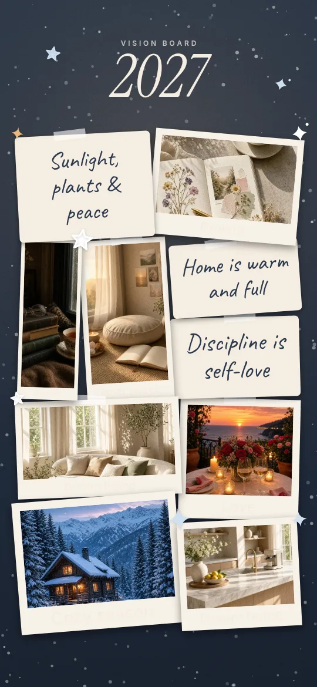

2027 AESTHETIC · COZY WINTER
Cozy winter wallpaper: a vision board for slow, warm months
Snowfall, warm cabin windows, a mug of cocoa and handwritten goals. Cozy Winter turns your lock screen into a hygge vision board for the start of 2027.



The Cozy Winter look in one line
Midnight blue, cream and candle-light amber. Polaroid frames, handwritten type and soft snow dots.
What to put on it
- A fireplace with a knit blanket and cocoa
- A snowy alpine cabin for a winter getaway
- A cozy reading nook for growth
- A meditation corner for inner peace
- A candle-lit dinner for love
In Glowboard you just tap the goals you want (travel, money, love, style and more) and the matching photos and affirmations are added for you. You can also add your own photos. They stay on your phone.
Tips for a board you will actually look at
- Winter boards work great for habits: reading, journaling, slow mornings.
- Handwritten-style text feels personal, so add one goal in your own words.
- Switch to a spring look in March to keep the board fresh.
- “Slow mornings, warm drinks”
- “Snow days & good books”
- “Hygge all winter”
- “Peace over everything”
- “Read 24 books”
How to set it as your lock screen
iPhone: tap Save image (or long-press and choose “Save to Photos”). Open Photos, tap Share, then Use as Wallpaper. Android: open the image in Gallery or Google Photos, tap ⋮, then Set as wallpaper, then Lock screen.
FAQ
Is Cozy Winter free?
Cozy Winter is a Pro look. Preview it with your own goals for free, then unlock it once for $4.99.
Will the snow cover my text?
No. The snow is a subtle background pattern behind the photos and text cards.
More 2027 looks


Glowboard is a free vision board wallpaper maker. There is no sign-up, and your photos never leave your device.